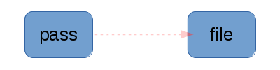

I previously published “A revisionist history of configuration management”. I meant for that to be the intro to this article, but it ended up being long enough that it deserved a separate post. I will explain Send/Recv in this article, but first a few clarifications to the aforementioned article.
Clarifications
I mentioned that my “revisionist history” was inaccurate, but I failed to mention that it was also not exhaustive! Many things were left out either because they were proprietary, niche, not well-known, of obscure design or simply for brevity. My apologies if you were involved with Bcfg2, Bosh, Heat, Military specifications, SaltStack, SmartFrog, or something else entirely. I’d love it if someone else wrote an “exhaustive history”, but I don’t think that’s possible.
It’s also worth re-iterating that without the large variety of software and designs which came before me, I wouldn’t have learned or have been able to build anything of value. Thank you giants! By discussing the problems and designs of other tools, then it makes it easier to contrast with and explaining what I’m doing in mgmt.
Notifications
If you’re not familiar with the directed acyclic graph model for configuration management, you should start by reviewing that material first. It models a system of resources (workers) as the vertices in that DAG, and the edges as the dependencies. We’re going to add some additional mechanics to this model.
There is a concept in mgmt called notifications. Any time the state of a resource is successfully changed by the engine, a notification is emitted. These notifications are emitted along any graph edge (dependency) that has been asked to relay them. Edges with the Notify property will do so. These are usually called refresh notifications.
Any time a resource receives a refresh notification, it can apply a special action which is resource specific. The svc resource reloads the service, the password resource generates a new password, the timer resource resets the timer, and the noop resource prints a notification message. In general, refresh notifications should be avoided if possible, but there are a number of legitimate use cases.
In mgmt notifications are designed to be crash-proof, that is to say, undelivered notifications are re-queued when the engine restarts. While we don’t expect mgmt to crash, this is also useful when a graph is stopped by the user before it has completed.
You’ll see these notifications in action momentarily.
Send/Recv
I mentioned in the revisionist history that I felt that Chef opted for raw code as a solution to the lack of power in Puppet. Having resources in mgmt which are event-driven is one example of increasing their power. Send/Recv is another mechanism to make the resource primitive more powerful.
Simply put: Send/Recv is a mechanism where resources can transfer data along graph edges.
The status quo
Consider the following pattern (expressed as Puppet code):
# create a directory
file { '/var/foo/':
ensure => directory,
}
# download a file into that directory
exec { 'wget http://example.com/data -O - > /var/foo/data':
creates => '/var/foo/data',
require => File['/var/foo/'],
}
# set some property of the file
file { '/var/foo/data':
mode => 0644,
require => File['/var/foo/data'],
}
First a disclaimer. Puppet now actually supports an http url as a source. Nevertheless, this was a common pattern for many years and that solution only improves a narrow use case. Here are some of the past and current problems:
There’s also a layering violation if you believe that network code (http downloading) shouldn’t be in a file resource. I think it adds unnecessary complexity to the file resource.
The solution
What the file resource actually needs, is to be able to accept (Recv) data of the same type as any of its input arguments. We also need resources which can produce (Send) data that is useful to consumers. This occurs along a graph (dependency) edge, since the sending resource would need to produce it before the receiver could act!
This also opens up a range of possibilities for new resource kinds that are clever about sending or receiving data. an http resource could contain all the necessary network code, and replace our use of the exec { ‘wget …’: } pattern.
Diagram
|  |
| in this graph, a password resource generates a random string and stores it in a file; more clever linkages are planned |
Example
As a proof of concept for the idea, I implemented a Password resource. This is a prototype resource that generates a random string of characters. To use the output, it has to be linked via Send/Recv to something that can accept a string. The file resource is one such possibility. Here’s an excerpt of some example output from a simple graph:
03:06:13 password.go:295: Password[password1]: Generating new password...
03:06:13 password.go:312: Password[password1]: Writing password token...
03:06:13 sendrecv.go:184: SendRecv: Password[password1].Password -> File[file1].Content
03:06:13 file.go:651: contentCheckApply: Invalidating sha256sum of `Content`
03:06:13 file.go:579: File[file1]: contentCheckApply(true)
03:06:13 noop.go:115: Noop[noop1]: Received a notification!
What you can see is that initially, a random password is generated. Next Send/Recv transfers the generated Password to the file’s Content. The file resource invalidates the cached Content checksum (a performance feature of the file resource), and then stores that value in the file. (This would normally be a security problem, but this is for example purposes!) Lastly, the file sends out a refresh notification to a Noop resource for demonstration purposes. It responds by printing a log message to that effect.
Libmgmt
Ultimately, mgmt will have a DSL to express the different graphs of configuration. In the meantime, you can use Puppet code, or a raw YAML file. The latter is primarily meant for testing purposes until we have the language built.
Lastly, you can also embed mgmt and use it like a library! This lets you write raw golang code to build your resource graphs. I decided to write the above example that way! Have a look at the code! This can be used to embed mgmt into your existing software! There are a few more examples available here.
Resource internals
When a resource receives new values via Send/Recv, it’s likely that the resource will have work to do. As a result, the engine will automatically mark the resource state as dirty and then poke it from the sending node. When the receiver resource runs, it can lookup the list of keys that have been sent. This is useful if it wants to perform a cache invalidation for example. In the resource, the code is quite simple:
<span class="pl-k">if</span> <span class="pl-smi">val</span>, <span class="pl-smi">exists</span> <span class="pl-k">:=</span> obj.<span class="pl-smi">Recv</span>[<span class="pl-s"><span class="pl-pds">"</span>Content<span class="pl-pds">"</span></span>]; exists && val.<span class="pl-smi">Changed</span> {
// the "Content" input has changed
}
Here is a good example of that mechanism in action.
Future work
This is only powerful if there are interesting resources to link together. Please contribute some ideas, and help build these resources! I’ve got a number of ideas already, but I’d love to hear yours first so that I don’t influence or stifle your creativity. Leave me a message in the comments below!
Happy Hacking,
James
Your comment has been submitted and will be published if it gets approved.
Click here to see the patch you generated.
{kind=link}
Comments
Nothing yet.
Post a comment